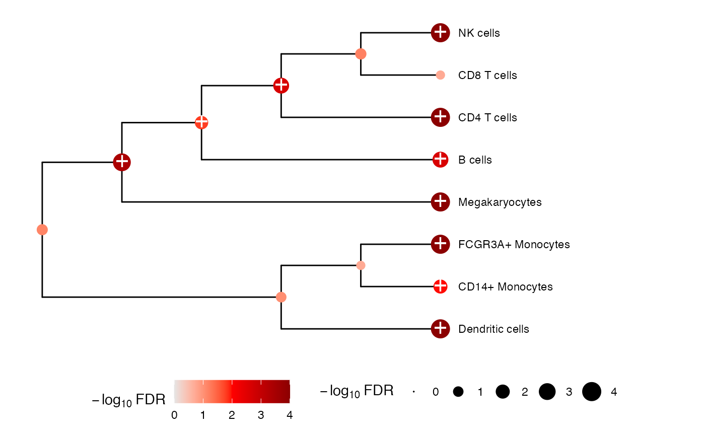
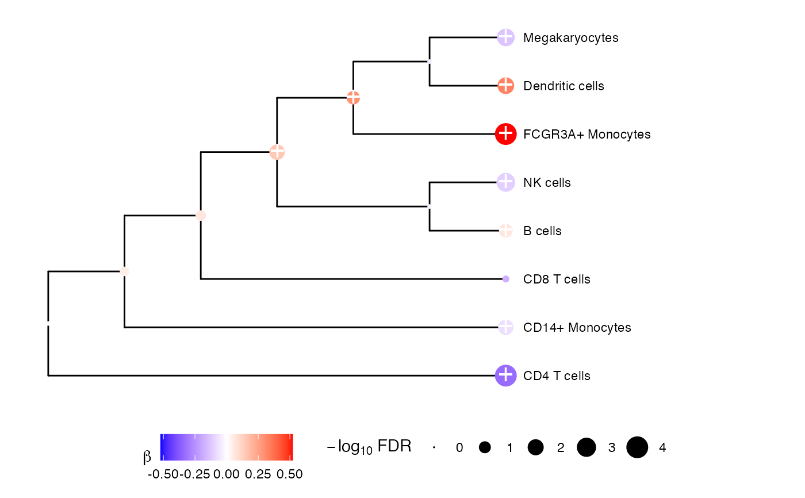

Compare difference in coefficient estimates between two trees. For node i, the test evaluates tree1[i] - tree2[i] = 0.
Arguments
- tree1
object of type
treedatafromtreeTest()- tree2
object of type
treedatafromtreeTest()
Details
When a fixed effect test is performed at each node using treeTest() with method = "FE.empirical" or method = "FE", a coefficient estimate and standard error are estimated for each node based on the children. This function performs a two-sample z-test to test if a given coefficient from tree1 is significantly different from the corresponding coefficient in tree2.
Examples
library(variancePartition)
# Load cell counts, clustering and metadata
# from Kang, et al. (2018) https://doi.org/10.1038/nbt.4042
data(IFNCellCounts)
# Simulate a factor with 2 levels called DiseaseRand
set.seed(123)
info$DiseaseRand <- sample(LETTERS[seq(2)], nrow(info), replace = TRUE)
info$DiseaseRand <- factor(info$DiseaseRand, LETTERS[seq(2)])
# Apply crumblr transformation
cobj <- crumblr(df_cellCounts)
# Use dream workflow to analyze each cell separately
fit <- dream(cobj, ~ StimStatus + ind, info)
fit <- eBayes(fit)
# Perform multivariate test across the hierarchy
res1 <- treeTest(fit, cobj, hcl, coef = "StimStatusstim")
# Perform same test, but on DiseaseRand
fit2 <- dream(cobj, ~DiseaseRand, info)
fit2 <- eBayes(fit2)
res2 <- treeTest(fit2, cobj, hcl, coef = "DiseaseRandB")
# Compare the coefficient estimates at each node
# Test if res1 - res2 is significantly different from zero
resDiff <- diffTree(res1, res2)
resDiff
#> 'treedata' S4 object'.
#>
#> ...@ phylo:
#>
#> Phylogenetic tree with 8 tips and 7 internal nodes.
#>
#> Tip labels:
#> B cells, CD14+ Monocytes, CD4 T cells, CD8 T cells, Dendritic cells, FCGR3A+
#> Monocytes, ...
#> Node labels:
#> B cells/CD14+ Monocytes/CD4 T cells/CD8 T cells/Dendritic cells/FCGR3A+
#> Monocytes/Megakaryocytes/NK cells, B cells/CD4 T cells/CD8 T
#> cells/Megakaryocytes/NK cells, CD14+ Monocytes/Dendritic cells/FCGR3A+
#> Monocytes, CD14+ Monocytes/FCGR3A+ Monocytes, B cells/CD4 T cells/CD8 T
#> cells/NK cells, CD4 T cells/CD8 T cells/NK cells, ...
#>
#> Rooted; includes branch length(s).
#>
#> with the following features available:
#> 'beta', 'se', 'stat', 'pvalue', 'n_features', 'lambda', 'method', 'FDR'.
#>
#> # The associated data tibble abstraction: 15 × 11
#> # The 'node', 'label' and 'isTip' are from the phylo tree.
#> node label isTip beta se stat pvalue n_features lambda method
#> <int> <chr> <lgl> <dbl> <dbl> <dbl> <dbl> <dbl> <dbl> <chr>
#> 1 1 B cells TRUE 0.0625 0.151 0.414 6.79e-1 1 0.01 FE.em…
#> 2 2 CD14+ Mon… TRUE -0.0493 0.152 -0.324 7.46e-1 1 0.01 FE.em…
#> 3 3 CD4 T cel… TRUE -0.327 0.208 -1.57 1.16e-1 1 0.01 FE.em…
#> 4 4 CD8 T cel… TRUE -0.229 0.372 -0.615 5.38e-1 1 0.01 FE.em…
#> 5 5 Dendritic… TRUE 0.367 0.281 1.30 1.93e-1 1 0.01 FE.em…
#> 6 6 FCGR3A+ M… TRUE 0.528 0.181 2.92 3.45e-3 1 0.01 FE.em…
#> 7 7 Megakaryo… TRUE -0.152 0.191 -0.798 4.25e-1 1 0.01 FE.em…
#> 8 8 NK cells TRUE -0.0955 0.157 -0.606 5.44e-1 1 0.01 FE.em…
#> 9 9 B cells/C… FALSE -0.0459 0.0242 -1.90 5.74e-2 8 0.01 FE.em…
#> 10 10 B cells/C… FALSE -0.197 0.0520 -3.79 1.51e-4 5 0.01 FE.em…
#> # ℹ 5 more rows
#> # ℹ 1 more variable: FDR <dbl>
plotTreeTest(resDiff)

plotTreeTestBeta(resDiff)
